flowchart LR subgraph DW[Data Wrangling] direction LR A(Importar) --> B(Ordenar) B --> C(Transformar) end subgraph EDA["Exploratory Data Analysis (EDA)"] direction RL C2(Transformar) --> D(Visualizar) D --> C2 end subgraph MO[Modeling] direction RL E(Modelar) --> F(Evaluar) F --> E end subgraph CO[Communicate] G(comunicar) end DW --> EDA EDA --> MO MO --> EDA MO --> CO
2 Uso de ggplot2
2.1 Abstración del problema
Antes de comenzar con EDA, hagamos una conceptualización del tipo de problemas que queremos resolver con lo que conocemos como Ciencia de Datos (En el tablero)
2.2 Análisis exploratorio
El análisis exploratorio se lleva a cabo a través de transformaciones y visualizaciones de los datos.1 El proceso puede ser iterativo y ayuda a comprender mejor el tipo de datos con los que se está trabajando, muchos problemas en Ciencia de Datos se resuelven en esta fase.
2.3 ¿Cómo hacer EDA en R?
Hay muchos paquetes en R pensados para facilitar el trabajo del científico de datos. Nos basaremos en el ecosistema de paquetes optimizados para análisis de datos, conocido como tidyverse
El core tidyverse es el conjunto principal de paquetes de este ecosistema:
ggplot2: Para hacer gráficasdiplyr: Para manipulación de datostidyr: Para organizar bases de datos en formato tidyreadr: Para importar datostibble: para manejo de bases de datos con muchos datosstringr: Para manipular stringsforcats: Para manipular variables categóricas
podemos cargar cada paquete de forma individual (library(ggplot2)) o cargarlos de forma conjunta con library(tidyverse). Nos interesan principalmente ggplot2 y dplyr.
Para poder hacer análisis de cualquier tipo, primero necesitamos tener disponible un conjunto de datos o data frame (o en formato del tidyverse un tibble2). Hay varias formas de obtener datos en R
- Datos sintéticos (simulados)
- Bases de datos instaladas con
Ro con alguno de sus paquetes - Importarlo desde una fuente externa, ya sea de forma local o desde la web
Usaremos una base de datos que viene en el paquete palmerpenguins (hay que instalar y cargar la librería) que es bastante adecuada para iniciar un análisis exploratorio
library(palmerpenguins)
penguins# A tibble: 344 × 8
species island bill_length_mm bill_depth_mm flipper_length_mm body_mass_g
<fct> <fct> <dbl> <dbl> <int> <int>
1 Adelie Torgersen 39.1 18.7 181 3750
2 Adelie Torgersen 39.5 17.4 186 3800
3 Adelie Torgersen 40.3 18 195 3250
4 Adelie Torgersen NA NA NA NA
5 Adelie Torgersen 36.7 19.3 193 3450
6 Adelie Torgersen 39.3 20.6 190 3650
7 Adelie Torgersen 38.9 17.8 181 3625
8 Adelie Torgersen 39.2 19.6 195 4675
9 Adelie Torgersen 34.1 18.1 193 3475
10 Adelie Torgersen 42 20.2 190 4250
# ℹ 334 more rows
# ℹ 2 more variables: sex <fct>, year <int>Otra herramienta que usaremos con frecuencia en nuestros códigos es el operador pipe. Este operador viene en dos versiones:
|>: Versión base o nativa deR, no requiere la instalación de ningún paquete%>%: Versión del tidyverse, requiere cargar alguno de los paquetesdplyr,magrittr,tidyverse
El atajo de teclado para el operador pipe es . Por defecto se genera %>%, para generar el operador nativo |>, debe ingresar a Tools -> Global Options -> Code -> Editing y activar la casilla use native pipe operator
El operador pipe nos permite escribir código de forma lineal y más fácilmente legible de izquierda a derecha, en lugar de funciones anidadas.
sin(log(sum(c(1,2,3))))[1] 0.9756868# usando el operador pipe
c(1,2,3) |> sum() |> log() |> sin()[1] 0.9756868El operador permite pasar el resultado de la izquierda como primer argumento de la función siguiente a la derecha.
El tipo de gráfica que debemos crear depende del tipo de variables que tengamos y de la forma en que las queramos analizar, por lo que es importante elegir las gráficas adecuadas. Antes de empezar a construir gráficas, recordemos una definición de los tipos de variables que podemos tener
- Numéricas (cuantitativas)
- Discretas
- Continuas
- categóricas (cualitativas o factores)
- Ordinales
- Nominales
ejecute ?penguins para estudiar y entender los datos en penguins
Dividamos el trabajo por casos
2.4 Caso 1. Una variable numérica
Algunas gráficas para este caso:
- Histogramas
- Gráficos de densidad
- Diagramas de caja
library(ggplot2)
library(palmerpenguins)
ggplot(data = penguins)
Una forma alterna (la que más vamos a usar) usando el operador pipe sería penguins |> ggplot()
ggplot2 implementa lo que se conoce como gramática de gráficos, que en resumen quiere decir que el gráfico se construye al ir agregando capas (layers). Al aplicar la función ggplot() a una base de datos, se crea un lienzo en blanco (gris).
penguins |> ggplot(mapping = aes(x = body_mass_g))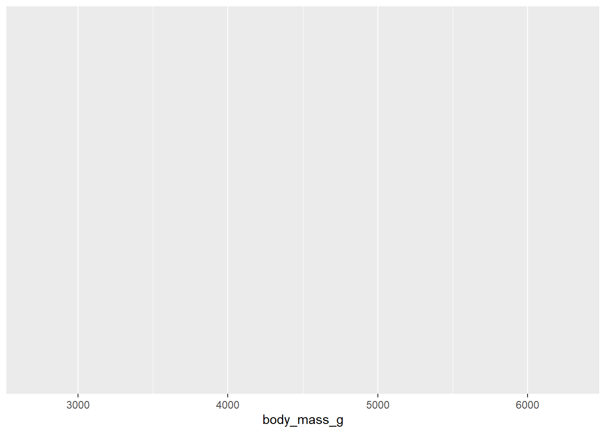
Aún no se muestra una gráfica, se ha creado un mapeo y puede verse la escala de valores de la variable body_mass_g en el eje X, pero aún falta por agregar el tipo de geometría o tipo de gráfico a construir
penguins |> ggplot(mapping = aes(x = body_mass_g)) +
geom_histogram()`stat_bin()` using `bins = 30`. Pick better value with `binwidth`.Warning: Removed 2 rows containing non-finite values (`stat_bin()`).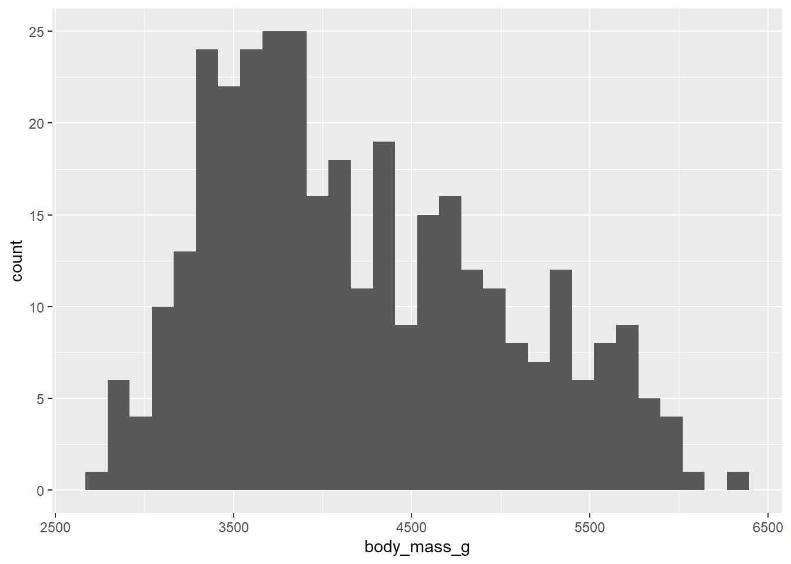
ggplot nos informa sobre la presencia de 2 valores no finitos, probablemente sean NA. Por ahora eliminemos los NA de la base de datos3
penguins <- na.omit(penguins)Volvemos a intentar la gráfica
penguins |> ggplot(mapping = aes(x = body_mass_g)) +
geom_histogram()`stat_bin()` using `bins = 30`. Pick better value with `binwidth`.
Para hacer gráficos ordenados, es bueno personalizar las etiquetas y los títulos y subtítulos, esto se logra con la función labs() que tiene argumentos como title, subtitle, caption, etc
penguins |> ggplot(mapping = aes(x = body_mass_g)) +
geom_histogram() +
labs(
title = "Peso de los Pingüinos del Archipiélago de Palmer",
x = "Peso en gramos",
y = "Conteo",
caption = "Datos de 333 pingüinos distribuidos en 3 islas y 3 especies")`stat_bin()` using `bins = 30`. Pick better value with `binwidth`.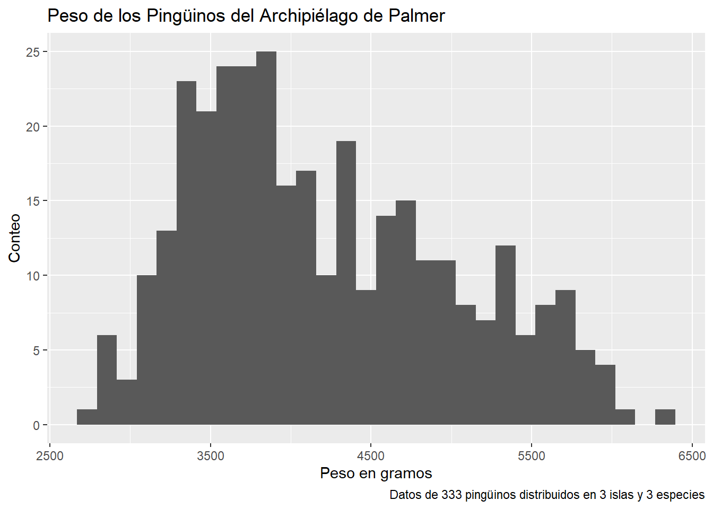
Algunos argumentos o propiedades, tales como el color (colour) y relleno (fill), son comunes a muchos o todos los tipos de geometrías. Otras propiedades son más específicas, para un histograma por ejemplo, tiene sentido tener propiedades de número de clases (bins) o ancho de las clases (binwidth), pero no tendría mucho sentido hablar de número de clases en un diagrama de cajas.
En el siguiente gráfico, modificamos la cantidad de clases a usar, el color del borde y el relleno.
penguins |> ggplot(mapping = aes(x = body_mass_g)) +
geom_histogram(fill="red", bins = 20, color = "black") +
labs(
title = "Peso de los Pingüinos del Archipiélago de Palmer",
x = "Peso en gramos",
y = "Conteo",
caption = "Datos de 333 pingüinos distribuidos en 3 islas y 3 especies")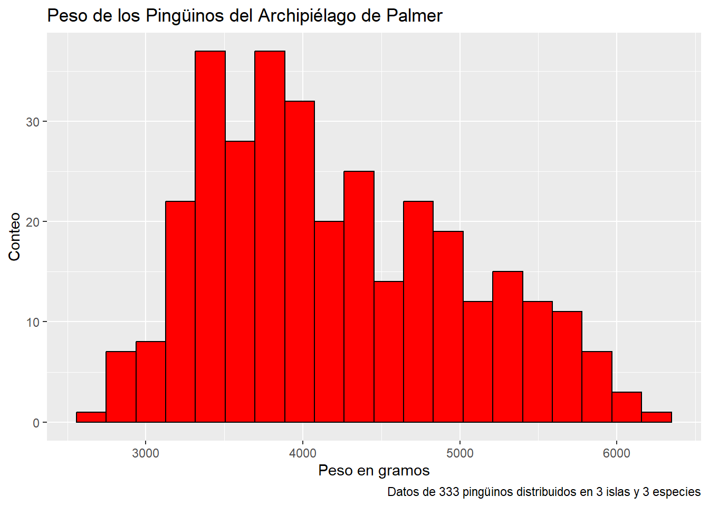
2.5 Bonus: Colores
Parte importante de toda gráfica, es el uso de los colores
En
Rpodemos manejar colores por nombres (en inglés, por supuesto) o usando sistemas de codificación como el RGB y HexadecimalUna lista de colores en
Rla podemos obtener concolors()4. La lista completa de colores disponibles enResN Colores 1 white 2 aliceblue 3 antiquewhite 4 antiquewhite1 5 antiquewhite2 6 antiquewhite3 7 antiquewhite4 8 aquamarine 9 aquamarine1 10 aquamarine2 11 aquamarine3 12 aquamarine4 13 azure 14 azure1 15 azure2 16 azure3 17 azure4 18 beige 19 bisque 20 bisque1 21 bisque2 22 bisque3 23 bisque4 24 black 25 blanchedalmond 26 blue 27 blue1 28 blue2 29 blue3 30 blue4 31 blueviolet 32 brown 33 brown1 34 brown2 35 brown3 36 brown4 37 burlywood 38 burlywood1 39 burlywood2 40 burlywood3 41 burlywood4 42 cadetblue 43 cadetblue1 44 cadetblue2 45 cadetblue3 46 cadetblue4 47 chartreuse 48 chartreuse1 49 chartreuse2 50 chartreuse3 51 chartreuse4 52 chocolate 53 chocolate1 54 chocolate2 55 chocolate3 56 chocolate4 57 coral 58 coral1 59 coral2 60 coral3 61 coral4 62 cornflowerblue 63 cornsilk 64 cornsilk1 65 cornsilk2 66 cornsilk3 67 cornsilk4 68 cyan 69 cyan1 70 cyan2 71 cyan3 72 cyan4 73 darkblue 74 darkcyan 75 darkgoldenrod 76 darkgoldenrod1 77 darkgoldenrod2 78 darkgoldenrod3 79 darkgoldenrod4 80 darkgray 81 darkgreen 82 darkgrey 83 darkkhaki 84 darkmagenta 85 darkolivegreen 86 darkolivegreen1 87 darkolivegreen2 88 darkolivegreen3 89 darkolivegreen4 90 darkorange 91 darkorange1 92 darkorange2 93 darkorange3 94 darkorange4 95 darkorchid 96 darkorchid1 97 darkorchid2 98 darkorchid3 99 darkorchid4 100 darkred 101 darksalmon 102 darkseagreen 103 darkseagreen1 104 darkseagreen2 105 darkseagreen3 106 darkseagreen4 107 darkslateblue 108 darkslategray 109 darkslategray1 110 darkslategray2 111 darkslategray3 112 darkslategray4 113 darkslategrey 114 darkturquoise 115 darkviolet 116 deeppink 117 deeppink1 118 deeppink2 119 deeppink3 120 deeppink4 121 deepskyblue 122 deepskyblue1 123 deepskyblue2 124 deepskyblue3 125 deepskyblue4 126 dimgray 127 dimgrey 128 dodgerblue 129 dodgerblue1 130 dodgerblue2 131 dodgerblue3 132 dodgerblue4 133 firebrick 134 firebrick1 135 firebrick2 136 firebrick3 137 firebrick4 138 floralwhite 139 forestgreen 140 gainsboro 141 ghostwhite 142 gold 143 gold1 144 gold2 145 gold3 146 gold4 147 goldenrod 148 goldenrod1 149 goldenrod2 150 goldenrod3 151 goldenrod4 152 gray 153 gray0 154 gray1 155 gray2 156 gray3 157 gray4 158 gray5 159 gray6 160 gray7 161 gray8 162 gray9 163 gray10 164 gray11 165 gray12 166 gray13 167 gray14 168 gray15 169 gray16 170 gray17 171 gray18 172 gray19 173 gray20 174 gray21 175 gray22 176 gray23 177 gray24 178 gray25 179 gray26 180 gray27 181 gray28 182 gray29 183 gray30 184 gray31 185 gray32 186 gray33 187 gray34 188 gray35 189 gray36 190 gray37 191 gray38 192 gray39 193 gray40 194 gray41 195 gray42 196 gray43 197 gray44 198 gray45 199 gray46 200 gray47 201 gray48 202 gray49 203 gray50 204 gray51 205 gray52 206 gray53 207 gray54 208 gray55 209 gray56 210 gray57 211 gray58 212 gray59 213 gray60 214 gray61 215 gray62 216 gray63 217 gray64 218 gray65 219 gray66 220 gray67 221 gray68 222 gray69 223 gray70 224 gray71 225 gray72 226 gray73 227 gray74 228 gray75 229 gray76 230 gray77 231 gray78 232 gray79 233 gray80 234 gray81 235 gray82 236 gray83 237 gray84 238 gray85 239 gray86 240 gray87 241 gray88 242 gray89 243 gray90 244 gray91 245 gray92 246 gray93 247 gray94 248 gray95 249 gray96 250 gray97 251 gray98 252 gray99 253 gray100 254 green 255 green1 256 green2 257 green3 258 green4 259 greenyellow 260 grey 261 grey0 262 grey1 263 grey2 264 grey3 265 grey4 266 grey5 267 grey6 268 grey7 269 grey8 270 grey9 271 grey10 272 grey11 273 grey12 274 grey13 275 grey14 276 grey15 277 grey16 278 grey17 279 grey18 280 grey19 281 grey20 282 grey21 283 grey22 284 grey23 285 grey24 286 grey25 287 grey26 288 grey27 289 grey28 290 grey29 291 grey30 292 grey31 293 grey32 294 grey33 295 grey34 296 grey35 297 grey36 298 grey37 299 grey38 300 grey39 301 grey40 302 grey41 303 grey42 304 grey43 305 grey44 306 grey45 307 grey46 308 grey47 309 grey48 310 grey49 311 grey50 312 grey51 313 grey52 314 grey53 315 grey54 316 grey55 317 grey56 318 grey57 319 grey58 320 grey59 321 grey60 322 grey61 323 grey62 324 grey63 325 grey64 326 grey65 327 grey66 328 grey67 329 grey68 330 grey69 331 grey70 332 grey71 333 grey72 334 grey73 335 grey74 336 grey75 337 grey76 338 grey77 339 grey78 340 grey79 341 grey80 342 grey81 343 grey82 344 grey83 345 grey84 346 grey85 347 grey86 348 grey87 349 grey88 350 grey89 351 grey90 352 grey91 353 grey92 354 grey93 355 grey94 356 grey95 357 grey96 358 grey97 359 grey98 360 grey99 361 grey100 362 honeydew 363 honeydew1 364 honeydew2 365 honeydew3 366 honeydew4 367 hotpink 368 hotpink1 369 hotpink2 370 hotpink3 371 hotpink4 372 indianred 373 indianred1 374 indianred2 375 indianred3 376 indianred4 377 ivory 378 ivory1 379 ivory2 380 ivory3 381 ivory4 382 khaki 383 khaki1 384 khaki2 385 khaki3 386 khaki4 387 lavender 388 lavenderblush 389 lavenderblush1 390 lavenderblush2 391 lavenderblush3 392 lavenderblush4 393 lawngreen 394 lemonchiffon 395 lemonchiffon1 396 lemonchiffon2 397 lemonchiffon3 398 lemonchiffon4 399 lightblue 400 lightblue1 401 lightblue2 402 lightblue3 403 lightblue4 404 lightcoral 405 lightcyan 406 lightcyan1 407 lightcyan2 408 lightcyan3 409 lightcyan4 410 lightgoldenrod 411 lightgoldenrod1 412 lightgoldenrod2 413 lightgoldenrod3 414 lightgoldenrod4 415 lightgoldenrodyellow 416 lightgray 417 lightgreen 418 lightgrey 419 lightpink 420 lightpink1 421 lightpink2 422 lightpink3 423 lightpink4 424 lightsalmon 425 lightsalmon1 426 lightsalmon2 427 lightsalmon3 428 lightsalmon4 429 lightseagreen 430 lightskyblue 431 lightskyblue1 432 lightskyblue2 433 lightskyblue3 434 lightskyblue4 435 lightslateblue 436 lightslategray 437 lightslategrey 438 lightsteelblue 439 lightsteelblue1 440 lightsteelblue2 441 lightsteelblue3 442 lightsteelblue4 443 lightyellow 444 lightyellow1 445 lightyellow2 446 lightyellow3 447 lightyellow4 448 limegreen 449 linen 450 magenta 451 magenta1 452 magenta2 453 magenta3 454 magenta4 455 maroon 456 maroon1 457 maroon2 458 maroon3 459 maroon4 460 mediumaquamarine 461 mediumblue 462 mediumorchid 463 mediumorchid1 464 mediumorchid2 465 mediumorchid3 466 mediumorchid4 467 mediumpurple 468 mediumpurple1 469 mediumpurple2 470 mediumpurple3 471 mediumpurple4 472 mediumseagreen 473 mediumslateblue 474 mediumspringgreen 475 mediumturquoise 476 mediumvioletred 477 midnightblue 478 mintcream 479 mistyrose 480 mistyrose1 481 mistyrose2 482 mistyrose3 483 mistyrose4 484 moccasin 485 navajowhite 486 navajowhite1 487 navajowhite2 488 navajowhite3 489 navajowhite4 490 navy 491 navyblue 492 oldlace 493 olivedrab 494 olivedrab1 495 olivedrab2 496 olivedrab3 497 olivedrab4 498 orange 499 orange1 500 orange2 501 orange3 502 orange4 503 orangered 504 orangered1 505 orangered2 506 orangered3 507 orangered4 508 orchid 509 orchid1 510 orchid2 511 orchid3 512 orchid4 513 palegoldenrod 514 palegreen 515 palegreen1 516 palegreen2 517 palegreen3 518 palegreen4 519 paleturquoise 520 paleturquoise1 521 paleturquoise2 522 paleturquoise3 523 paleturquoise4 524 palevioletred 525 palevioletred1 526 palevioletred2 527 palevioletred3 528 palevioletred4 529 papayawhip 530 peachpuff 531 peachpuff1 532 peachpuff2 533 peachpuff3 534 peachpuff4 535 peru 536 pink 537 pink1 538 pink2 539 pink3 540 pink4 541 plum 542 plum1 543 plum2 544 plum3 545 plum4 546 powderblue 547 purple 548 purple1 549 purple2 550 purple3 551 purple4 552 red 553 red1 554 red2 555 red3 556 red4 557 rosybrown 558 rosybrown1 559 rosybrown2 560 rosybrown3 561 rosybrown4 562 royalblue 563 royalblue1 564 royalblue2 565 royalblue3 566 royalblue4 567 saddlebrown 568 salmon 569 salmon1 570 salmon2 571 salmon3 572 salmon4 573 sandybrown 574 seagreen 575 seagreen1 576 seagreen2 577 seagreen3 578 seagreen4 579 seashell 580 seashell1 581 seashell2 582 seashell3 583 seashell4 584 sienna 585 sienna1 586 sienna2 587 sienna3 588 sienna4 589 skyblue 590 skyblue1 591 skyblue2 592 skyblue3 593 skyblue4 594 slateblue 595 slateblue1 596 slateblue2 597 slateblue3 598 slateblue4 599 slategray 600 slategray1 601 slategray2 602 slategray3 603 slategray4 604 slategrey 605 snow 606 snow1 607 snow2 608 snow3 609 snow4 610 springgreen 611 springgreen1 612 springgreen2 613 springgreen3 614 springgreen4 615 steelblue 616 steelblue1 617 steelblue2 618 steelblue3 619 steelblue4 620 tan 621 tan1 622 tan2 623 tan3 624 tan4 625 thistle 626 thistle1 627 thistle2 628 thistle3 629 thistle4 630 tomato 631 tomato1 632 tomato2 633 tomato3 634 tomato4 635 turquoise 636 turquoise1 637 turquoise2 638 turquoise3 639 turquoise4 640 violet 641 violetred 642 violetred1 643 violetred2 644 violetred3 645 violetred4 646 wheat 647 wheat1 648 wheat2 649 wheat3 650 wheat4 651 whitesmoke 652 yellow 653 yellow1 654 yellow2 655 yellow3 656 yellow4 657 yellowgreen
- Manejar colores por nombres nos permite recordarlos fácilmente, pero es bastante limitado, a pesar de los más de 600 colores de la lista, no es nada comparado con los más de 16 millones de colores que podemos generar con sistemas como RGB o HEX (aunque tampoco necesitamos tantos colores, ni todas las pantallas pueden generarlos ni nosotros notamos la diferencia)
2.5.1 RGB
Iniciales de los colores primarios (en inglés): R: Red; G: Green; B: Blue. Se basa en la combinación de diferentes niveles de intensidad para cada uno de estos colores
Se representa como una terna, donde cada valor está, por lo general, entre 0 y 255 (también en escala de 0 a 1 o en porcentajes de 0 a 100). Equivalencia de los colores primarios:
- Rojo: rgb(255, 0, 0)
- Verde: rgb(0, 255, 0)
- Azul: rgb(0, 0, 255)
Algunos colores en sistema RGB (intente comprender el código completo, no se usa ggplot2 sino la función base
plotdeR, ejecute?ploten la consola para ver la documentación si quiere aprender a usar esta función base deR)plot(x = rep(1,3), col = c(rgb(230,50,110, maxColorValue = 255), rgb(20,50,10, maxColorValue = 100), rgb(0.5,0.5,0.7)), main = "Algunos colores con RGB", xlim = c(0,4), xlab = "", ylab="", pch = 20, cex = 10)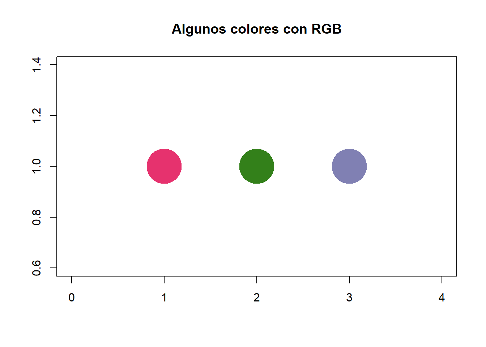
Por defecto, la función
rgb()enR, tomará como valor máximo de la escala el 1, así que si se está trabajando en la escala 0-255 (lo más usual), es necesario establecermaxColorValue=255, en realidad de puede trabajar con cualquier valor positivo,Rhará la conversión de forma adecuada.los 256 posibles valores para cada componente (0-255), pueden producir en total \(256^3=16777216\), ¡más de 16 millones de colores!
Es posible agregar un valor \(\alpha\) de opacidad a los colores (estudie y comprenda el siguiente código)
alfa <- seq(5, 255, by = 25) # ¿qué hace esto? plot(x = rep(1,length(alfa)), col = rgb(17, 125, 0, maxColorValue = 255, alpha = alfa), cex = 10, pch = 20, xlab = "", ylab = "", xlim = c(0,12), main = "Agregar opacidad al color")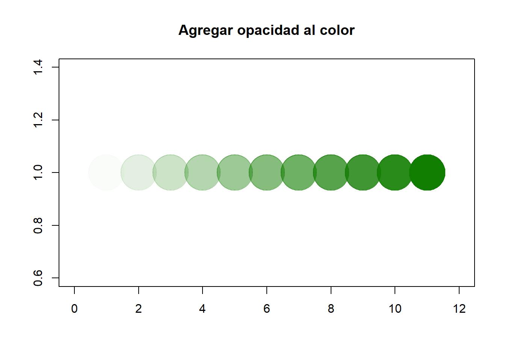
2.5.2 Hexadecimal
El sistema hexadecimal consta de 6 posiciones 👨🏫, las primeras 2 para el rojo, las siguientes para el verde y las últimas para el azul. Cada una de estas varía entre 00 y FF. Equivalencia de los colores primarios:
- Rojo: #FF0000
- Verde: #00FF00
- Azul: #0000FF
Hay una correspondencia uno a uno entre ambos sistemas (RGB y HEX). Al igual que el sistema RGB, se puede agregar una propiedad de opacidad al agregar 2 posiciones más (también entre 00 y FF) al sistema Hexadecimal.
Algunos colores en sistema Hexadecimal
plot(x = rep(1,7), col = c("#AD504E", "#5F9EA0", "#009ACD", "#435EBF", "#2F5A63", "#2F5A63A6", "#2F5A6355"), cex = 10, pch = 20, xlab = "", ylab = "", xlim = c(0,8), main = "Algunos colores con Hexadecimal")
La equivalencia de los colores primarios en los sistemas RGB y Hex, se resume en la imagen
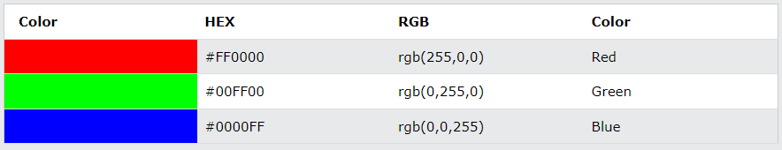
La función
rgb()convierte el código RGB a Hexadecimal. También se puede hacer lo contrario con la funcióncol2rgb()rgb(255, 0, 0, maxColorValue = 255) # De RGB a Hexadecimal[1] "#FF0000"col2rgb("#FF0000") # De Hexadecimal a RGB[,1] red 255 green 0 blue 0Dado que estamos hablando de colores, sin duda alguna lo más natural y sencillo es verlos en lugar de memorizar códigos. Hay muchas herramientas online que sirven como mezcladores de colores y nos devuelven los respectivos códigos en diferentes sistemas. Puede consultar el siguiente tutorial para más detalles
En Rstudio podemos instalar el complemento
colourPickerconinstall.packages("colourpicker"). Al hacerlo se activa en el botón Addins un nuevo complemento. 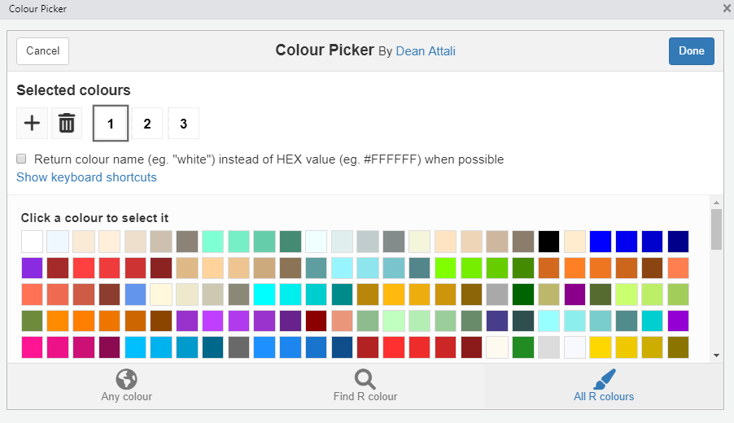
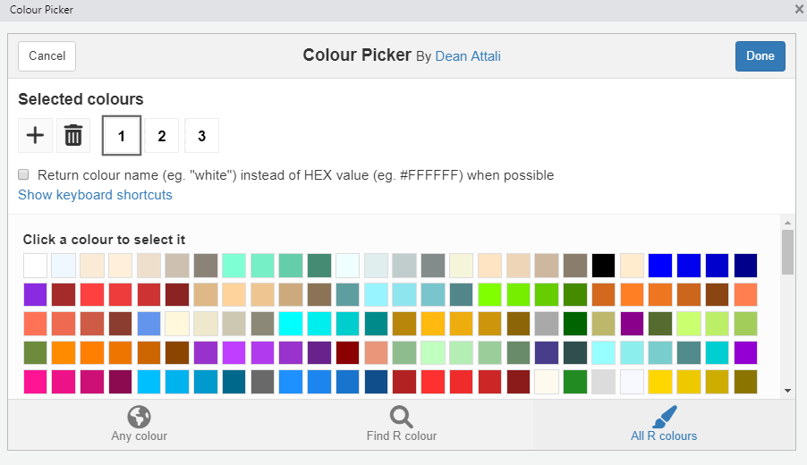
2.6 Volviendo a ggplot2
penguins |> ggplot(mapping = aes(x = body_mass_g)) +
geom_histogram(fill="#FA88FC9B", color = "darkblue", binwidth = 200) +
labs(
title = "Peso de los Pingüinos del Archipiélago de Palmer",
x = "Peso en gramos",
y = "Conteo",
caption = "Datos de 333 pingüinos distribuidos en 3 islas y 3 especies")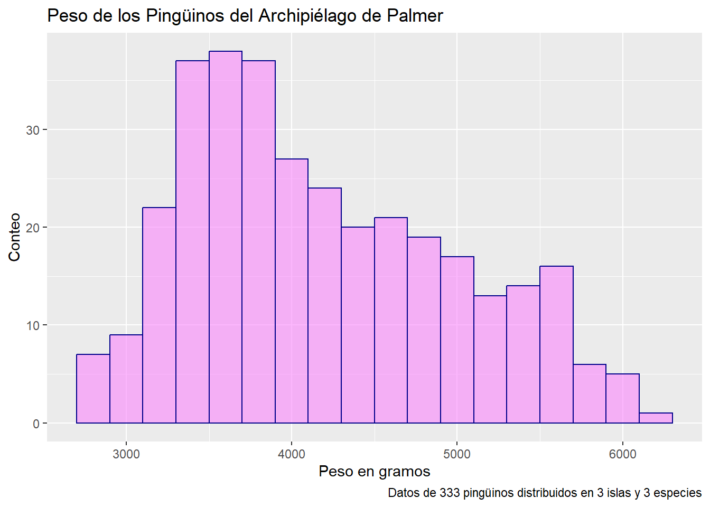
Podemos cambiar la orientación del histograma al cambiar la variable en el argumento mapping y actualizar las etiquetas del gráfico
penguins |> ggplot(mapping = aes(y = body_mass_g)) +
geom_histogram(fill="#FFD08594", color = "darkblue", binwidth = 200) +
labs(
title = "Peso de los Pingüinos del Archipiélago de Palmer",
y = "Peso en gramos",
x = "Conteo",
caption = "Datos de 333 pingüinos distribuidos en 3 islas y 3 especies")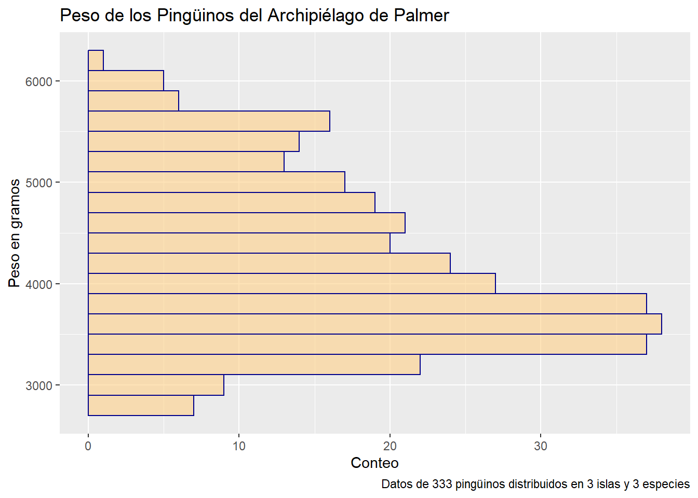
Un gráfico de densidad se obtiene con geom_density()
penguins |> ggplot(mapping = aes(x = body_mass_g)) +
geom_density(fill="aliceblue", color = "black") +
labs(
title = "Peso de los Pingüinos del Archipiélago de Palmer",
x = "Peso en gramos",
y = "",
caption = "Datos de 333 pingüinos distribuidos en 3 islas y 3 especies")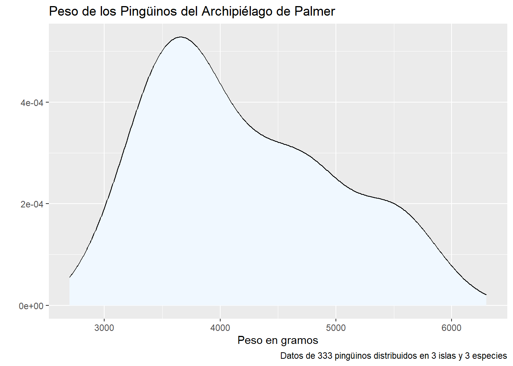
Posición del signo “+”
el signo + NO debe ir al comienzo de una línea, puede ir como último elemento de la línea pero no de primero
El siguiente código mostrará un error debido a la posición errada del signo +
penguins |> ggplot(mapping = aes(x = body_mass_g))
+ geom_density(fill="aliceblue", color = "black") +
labs(
title = "Peso de los Pingüinos del Archipiélago de Palmer",
x = "Peso en gramos",
y = "",
caption = "Datos de 333 pingüinos distribuidos en 3 islas y 3 especies")
## Error:
## ! Cannot use `+` with a single argument
## ℹ Did you accidentally put `+` on a new line?Siguiendo la lógica de construcción de las gráficas anteriores, no debe ser difícil ahora crear un diagrama de cajas, la geometría necesaria tiene el nombre que uno esperaría: geom_boxplot()
penguins |> ggplot(aes(y = body_mass_g)) +
geom_boxplot() +
labs(
title = "Diagrama de Cajas para el peso en gramos de los Pingüinos",
y = "Peso en gramos"
)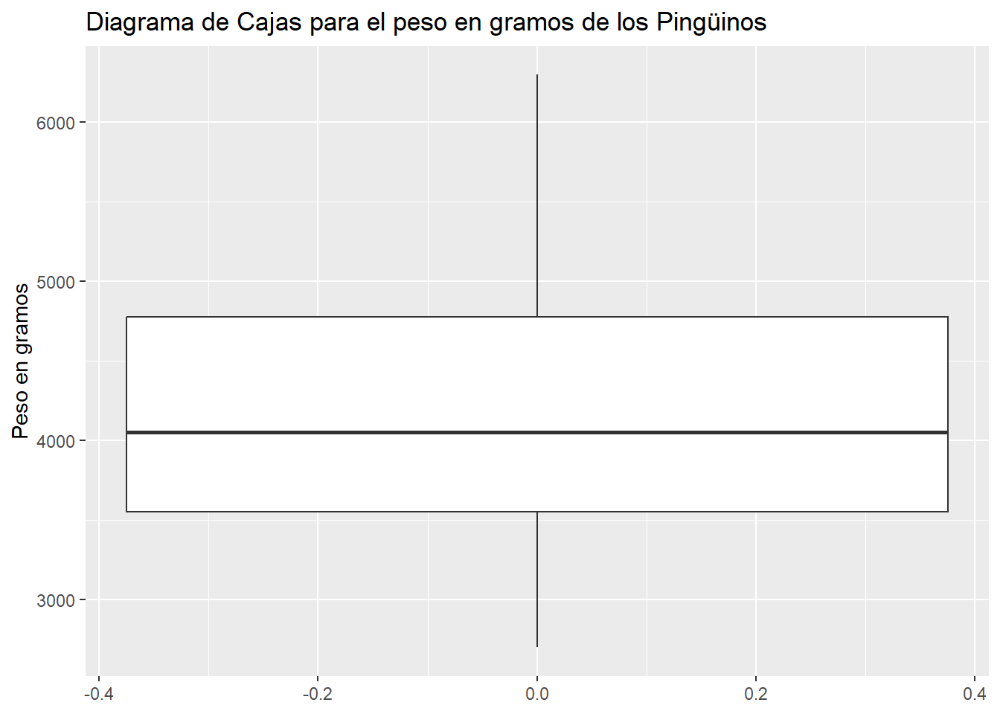
2.7 Caso 2. Una variable numérica y una categórica o factor
Al agregar una variable categórica o factor, podemos obtener información más detallada de la distribución del peso de los pingüinos por especie o isla
penguins |> ggplot(aes(x = body_mass_g, fill=species)) +
geom_histogram(color="black")`stat_bin()` using `bins = 30`. Pick better value with `binwidth`.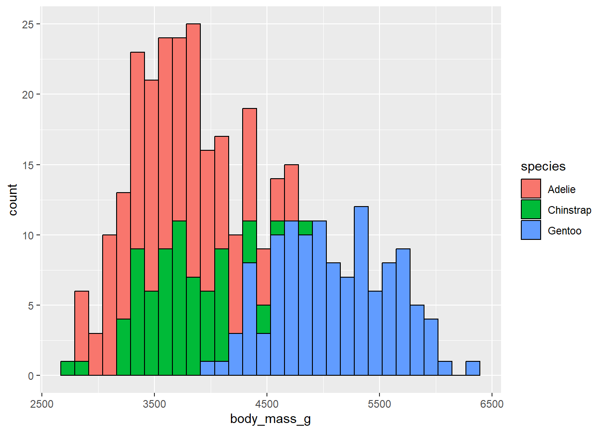
¿Cómo actúa el argumento fill dentro de aes() y por qué es diferente cuando se usa como argumento dentro de geom_histogram?5
Note que se agregan leyendas de forma automática y las podemos personalizar. El argumento alpha agrega opacidad (transparencia) al color, debe ser un valor entre 0 (totalmente transparente) y 1 (totalmente opaco)
penguins |> ggplot(aes(x = body_mass_g, fill = species)) +
geom_histogram(color = "darkblue", binwidth = 200, alpha = 0.7) +
labs(
title = "Peso de los Pingüinos del Archipiélago de Palmer",
x = "Peso en gramos",
y = "Conteo",
fill = "Especie",
caption = "Datos de 333 pingüinos discriminados por especies")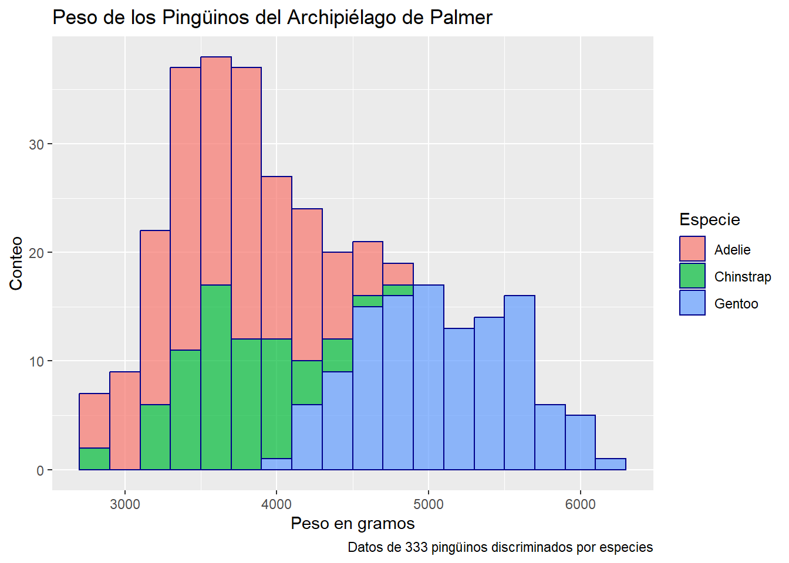
Al igual que con el histograma, podemos combinar la variable categórica para construir gráficos de densidad y gráficos de caja por cada categoría
penguins |> ggplot(aes(x = body_mass_g, fill = species)) +
geom_density(alpha = 0.5) +
labs(
title = "Distribución del peso por especie",
subtitle = "Datos de pingüinos del archipiélago de Palmer",
fill = "Especie",
y = "",
x = "Peso en gramos"
)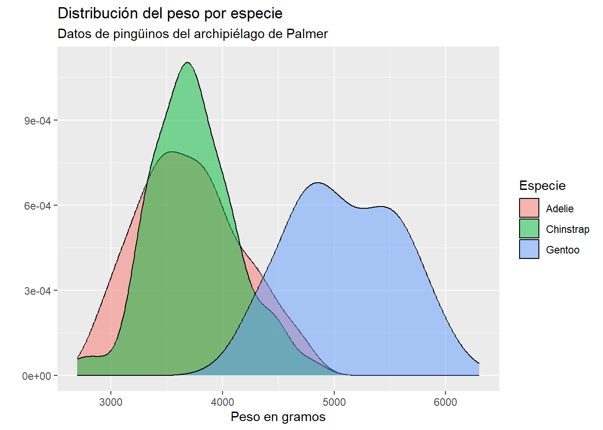
Los gráficos de densidad por categoría sobre la misma escala son muy útiles. El resultado anterior puede ser un poco desalentador ya que los gráficos se superponen, agregamos transparencia al color para tener una mejor lectura, pero una mejor opción es variar un poco la escala en el eje vertical para cada densidad6. ggplot2 no tiene soporte para este tipo de gráficos, pero podemos agregar una extensión que nos permite crearlos fácilmente (existen muchas extensiones para ggplot). La librería que debemos agregar es ggridges, instalamos desde la consola install.packages("ggridges") y cargamos la librería para poder usarla: library(ggridges)
# install.packages("ggridges") # haga esto en la consola
library(ggridges)Warning: package 'ggridges' was built under R version 4.3.1penguins |> ggplot(aes(x = body_mass_g, y = species)) +
geom_density_ridges()Picking joint bandwidth of 153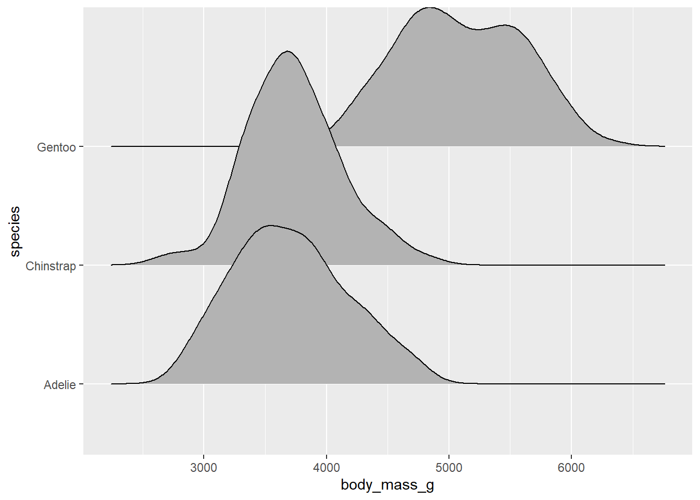
Con algo más de detalle, podemos obtener un mejor gráfico
penguins |> ggplot(aes(x = body_mass_g, y = species, fill = species)) +
geom_density_ridges(color = "gray",
alpha = 0.6,
size = 0.7,
scale = 1) +
labs(
title = "Distribución del peso por especie",
subtitle = "Datos de pingüinos del archipiélago de Palmer",
fill = "Especie",
y = "Especie",
x = "Peso en gramos"
)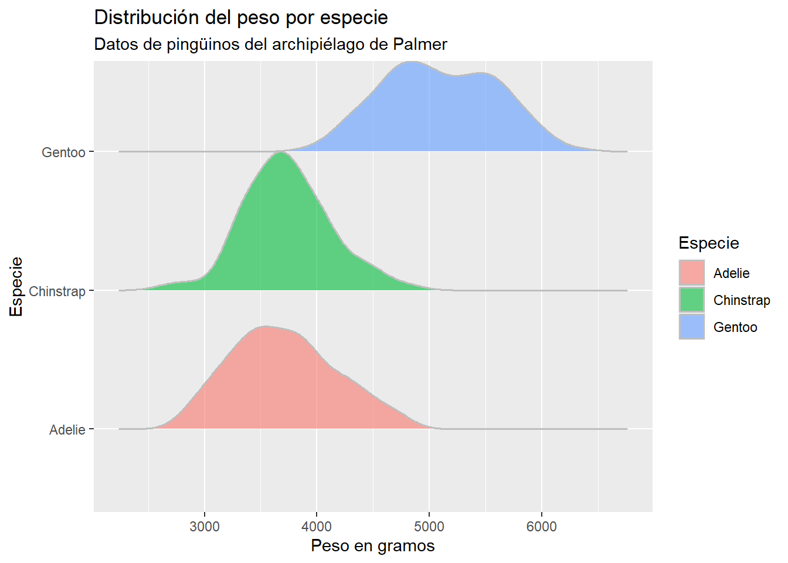
Teniendo en cuenta lo aprendido hasta ahora, intente reproducir el siguiente gráfico de cajas del peso de los pingüinoss por islas
Click para mostrar el código
penguins |> ggplot(aes(x = island, y = body_mass_g, fill = island)) +
geom_boxplot(alpha = 0.8) +
labs(
title = "Distribución del peso por isla",
subtitle = "Datos de pingüinos del archipiélago de Palmer",
fill = "Especie",
x = "Isla",
y = "Peso en gramos"
)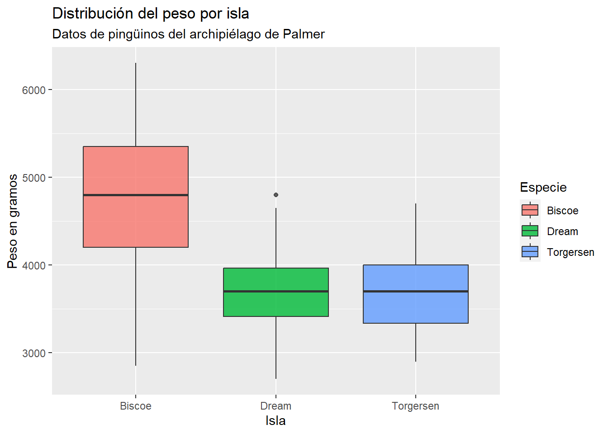
Ejercicio 2.1 Invierta la orientación del gráfico anterior
Un gráfico muy popular y que es parecido al diagrama de cajas, es el gráfico de violín. Se puede construir usando ggplot2 con la misma sencillez que los anteriores gráficos
penguins |> ggplot(aes(x = island, y = body_mass_g, fill = island)) +
geom_violin() +
labs(
title = "Distribución del peso por Isla",
x = "Isla",
y = "Peso en gramos",
fill = "Isla"
)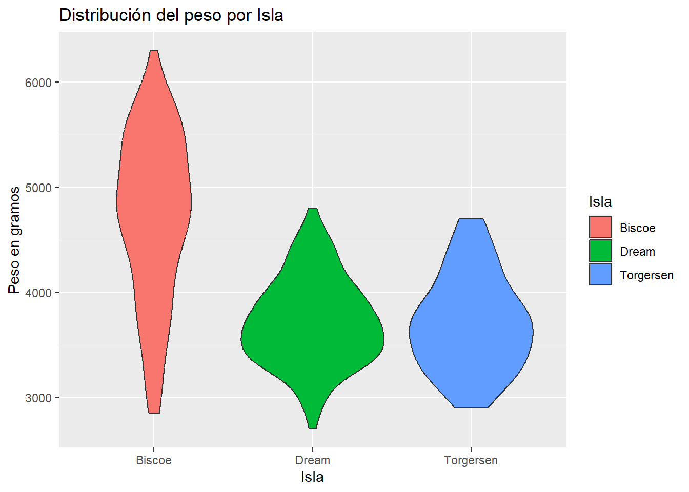
Sería interesante agregar sobre el mismo sistema de coordenadas, gráfico de violín y gráfico de caja
penguins |> ggplot(aes(x = island, y = body_mass_g, fill = island)) +
geom_violin() +
geom_boxplot()+
labs(
title = "Distribución del peso por Isla",
x = "Isla",
y = "Peso en gramos",
fill = "Isla"
)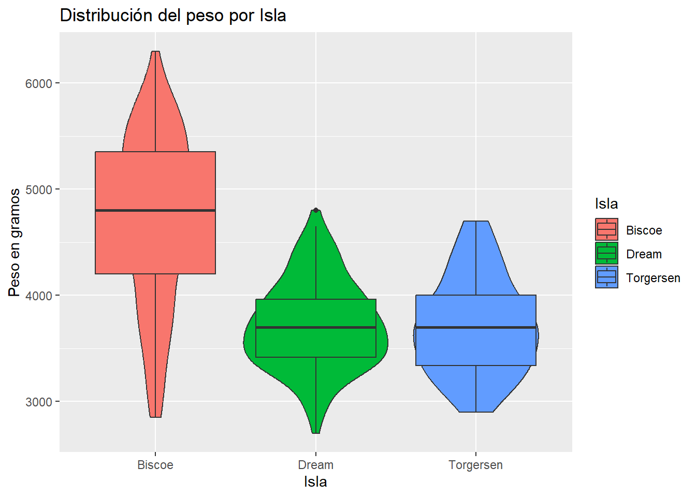
Esta combinación de gráficos es bastante usual, aunque nuestro resultado no es el mejor, afinarlo requiere del uso de otras librerías. Más adelante volveremos a este tipo de gráficos.
2.8 Caso 3. Dos variables numéricas
El gráfico más común para este caso es el diagrama de dispersión. Observemos la relación que hay entre el peso del pingüino y la longitud de la aleta
penguins |> ggplot(aes(x = flipper_length_mm, y = body_mass_g)) +
geom_point()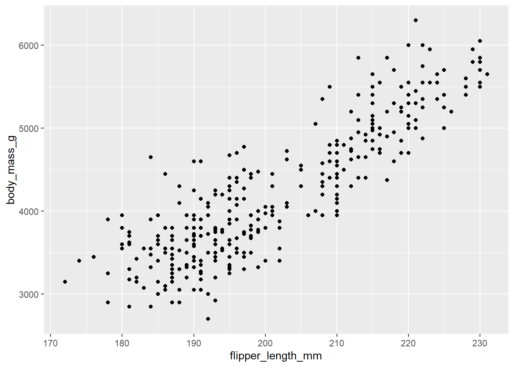
Con algo más de trabajo, podemos personalizar7 el resultado
penguins |> ggplot(aes(x = flipper_length_mm, y = body_mass_g)) +
geom_point(shape = 23, fill = "white",
colour = "purple", size = 3,
stroke = 3)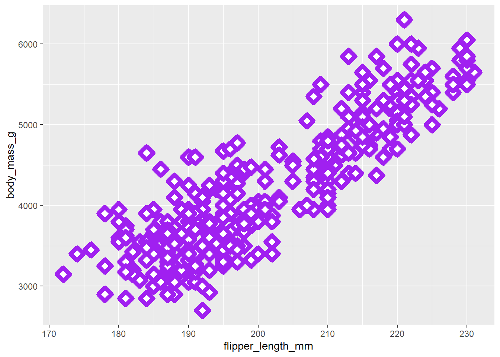
En R hay un total de 25 formas (argumento shape) básicas para representar estos puntos
data.frame(x = 1:25, y = 1:25) |> ggplot(aes(x = x, y = y)) +
geom_point(shape = 1:25, size = 5)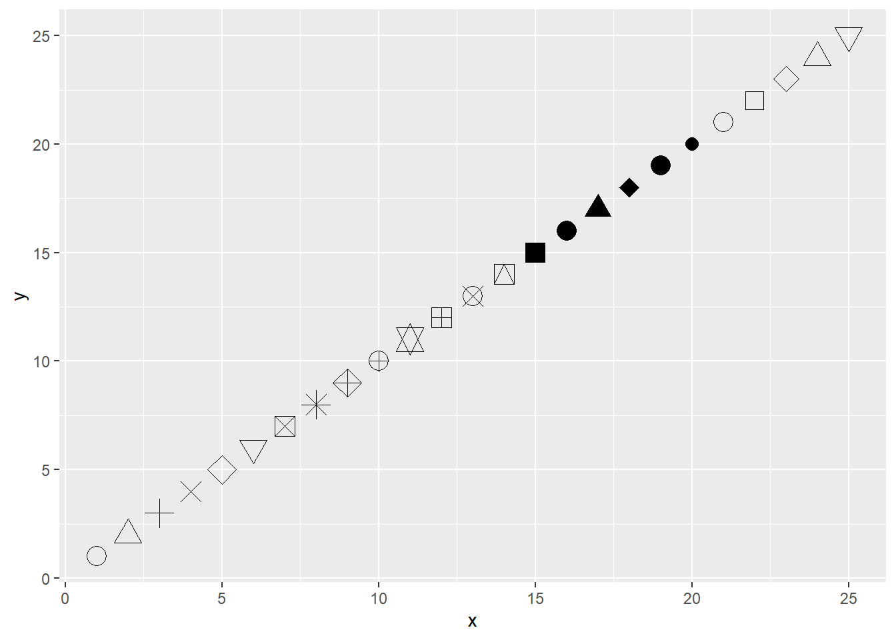
Todas estas formas admiten el argumento de color y de la forma 21 a 25 admiten además un argumento de relleno (fill). Reuniendo todo lo anterior, podemos crear un gráfico más detallado
penguins |> ggplot(aes(x = flipper_length_mm, y = body_mass_g)) +
geom_point(shape = 22, fill = "#37C790E6", colour = "black",
size = 2, stroke = 1) +
labs(
title = "Peso vs Longitud de la aleta",
subtitle = "Datos de 3 especies de pingüinos del archipiélago de Palmer",
x = "Longitudad de la aleta (mm)",
y = "Peso (gr)"
)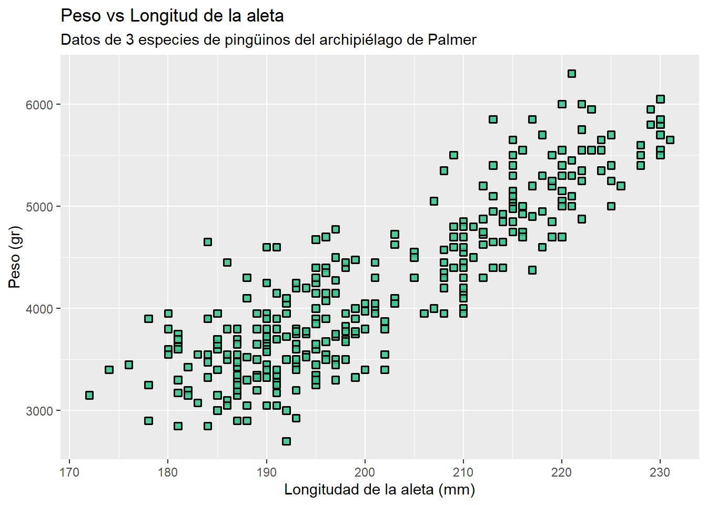
Podemos agregar distribuciones marginales a este diagrama de dispersión, usando el paquete ggExtra. Instale desde la consola: install.packages("ggExtra"). Veamos un ejemplo
library(ggExtra)
p1 <- penguins |> ggplot(aes(x = flipper_length_mm, y = body_mass_g)) +
geom_point(shape = 22, fill = "#37C790E6", colour = "black",
size = 2, stroke = 1) +
labs(
title = "Peso vs Longitud de la aleta",
subtitle = "Datos de 3 especies de pingüinos del archipiélago de Palmer",
x = "Longitudad de la aleta (mm)",
y = "Peso (gr)"
)
ggMarginal(p = p1)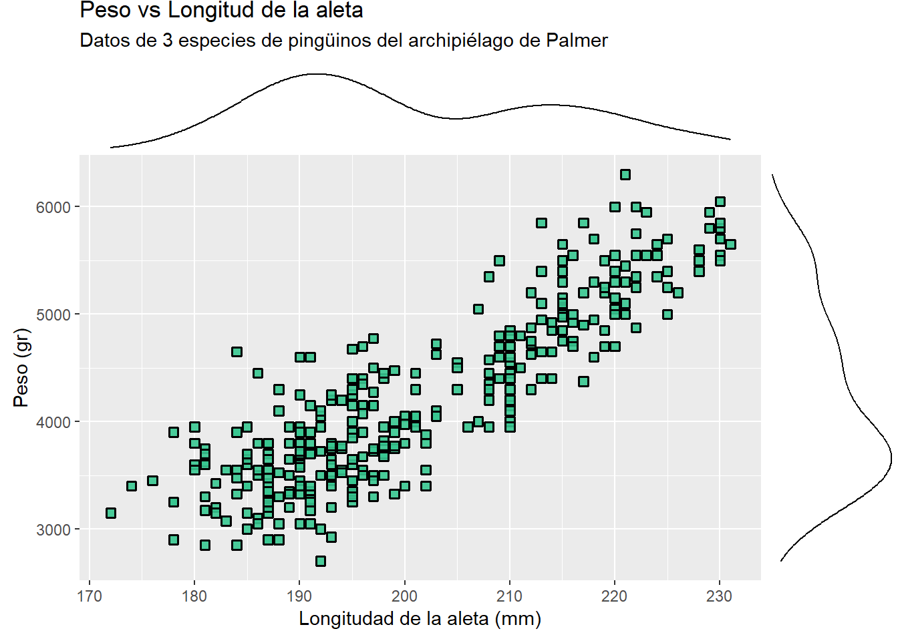
La función ggMarginal del paquete ggExtra no funciona con el operador pipe, por lo que es necesario guardar el objeto ggplot2 (gráfico) en una variable para luego aplicar la función ggMarginal sobre esta variable. Cambiando algunos detalles del gráfico anterior, obtenemos
library(ggExtra)
p1 <- penguins |> ggplot(aes(x = flipper_length_mm, y = body_mass_g)) +
geom_point(shape = 22, fill = "#37C790E6", colour = "black",
size = 2, stroke = 1) +
labs(
title = "Peso vs Longitud de la aleta",
subtitle = "Datos de 3 especies de pingüinos del archipiélago de Palmer",
x = "Longitudad de la aleta (mm)",
y = "Peso (gr)"
)
ggMarginal(p = p1,
type = "histogram",
size = 2,
fill = "slateblue",
bins = 20)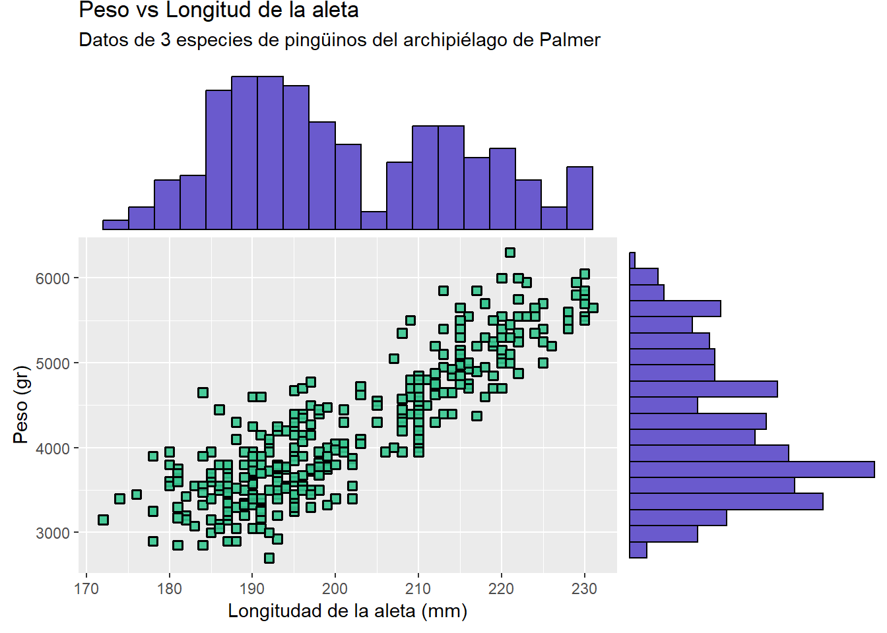
Otro tipo de gráfico útil para estudiar la relación entre dos variables numéricas es el de densidad en dos dimensiones, es igual de simple que los anteriores
penguins |> ggplot(aes(x = flipper_length_mm, y = body_mass_g)) +
geom_density_2d()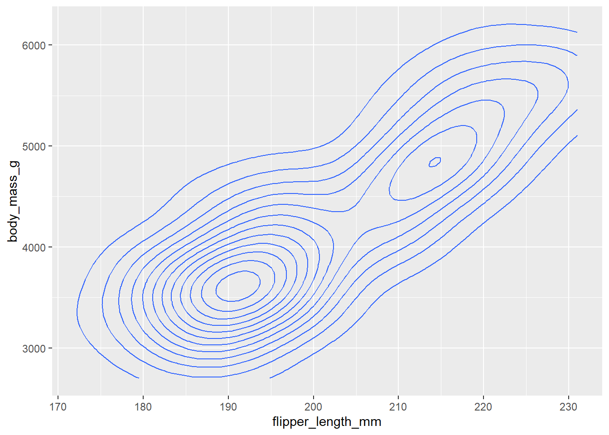
Para modificar de forma manual la escala de valores de los ejes, agregamos xlim(inf_x, sup_x) y ylim(inf_y, sup_y)
penguins |> ggplot(aes(x = flipper_length_mm, y = body_mass_g)) +
geom_density_2d() +
xlim(NA, 240) +
ylim(2000, 6500) +
labs(
title = "Densidad conjunta",
subtitle = "Datos de 3 especies de pingüinos del archipiélago de Palmer",
x = "Longitudad de la aleta (mm)",
y = "Peso (gr)"
)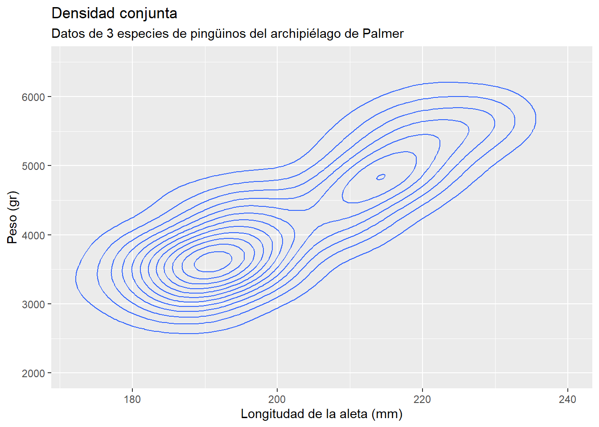
Volveremos después a revisar con más detalle estos gráficos.
2.9 Caso 4. Dos variables numéricas y una categórica
En el siguiente gráfico de dispersión, agregamos la información de la especie y además un modelo ajustado a los datos. Comparemos los dos resultados para comprender una característica fundamental de ggplot2
penguins |> ggplot(aes(x = flipper_length_mm,
y = body_mass_g,
colour = species)) +
geom_point() +
geom_smooth()`geom_smooth()` using method = 'loess' and formula = 'y ~ x'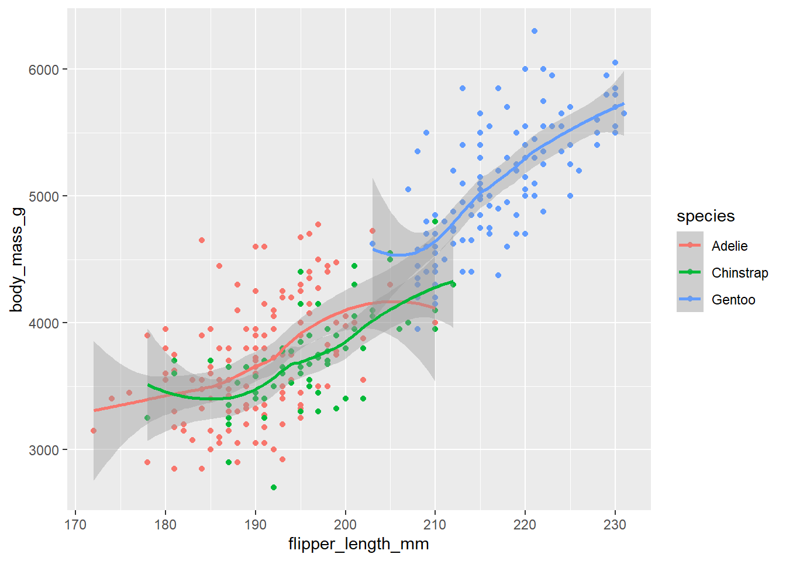
penguins |> ggplot(aes(x = flipper_length_mm, y = body_mass_g)) +
geom_point(mapping = aes(colour = species)) +
geom_smooth()`geom_smooth()` using method = 'loess' and formula = 'y ~ x'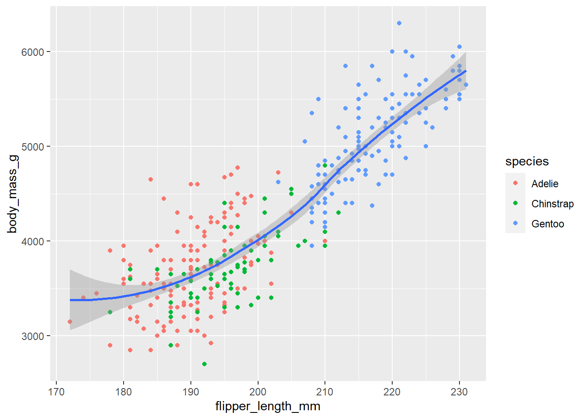
Los valores de data y magpping = aes() declarados en la función ggplot() se consideran globales, cada geometría agregada heredará estos valores, pero pueden ser reemplazados por declaraciones locales dentro de cada geometría. Eso quiere decir que cada geometría puede tener su propio conjunto de datos y su propia forma de mapear los datos en el gráfico, permitiendo así una gran flexibilidad en la creación de gráficas.
En el primer código se mapeó el atributo color con la variable especie, por eso al aplicar geom_smooth() se crea una estimación para cada tipo de especie. En el segundo código, el mapeo de color se hace dentro de geom_point() por lo que solo aplica para esa geometría en particular, al aplicar geom_smooth() no se tiene en cuenta ya que no se ha declarado globalmente dentro de la función ggplot()
Explique cada componente del siguiente gráfico
penguins |> ggplot(aes(x = flipper_length_mm, y = body_mass_g,)) +
geom_point(aes(color = species, shape = species), size = 2) +
geom_smooth(se = FALSE, color = "#8A0200", method = "lm") +
labs(
title = "Peso Vs Longitud de la aleta",
subtitle = "Datos de 3 especies de pingüinos del archipiélago de Palmer",
x = "Longitudad de la aleta (mm)",
y = "Peso (gr)",
color = "Especie",
shape = "Especie"
)`geom_smooth()` using formula = 'y ~ x'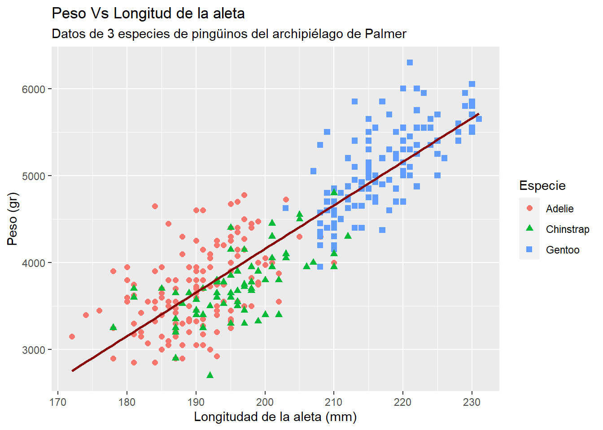
Usando el paquete ggthemes podemos mejorar la presentación del gráfico8
library(ggthemes)
penguins |> ggplot(aes(x = flipper_length_mm, y = body_mass_g,)) +
geom_point(aes(color = species, shape = species)) +
geom_smooth(se = FALSE, method = "lm") +
labs(
title = "Peso Vs Longitud de la aleta",
subtitle = "Datos de 3 especies de pingüinos del archipiélago de Palmer",
x = "Longitudad de la aleta (mm)",
y = "Peso (gr)",
color = "Especie",
shape = "Especie"
) + ggthemes::scale_colour_colorblind()`geom_smooth()` using formula = 'y ~ x'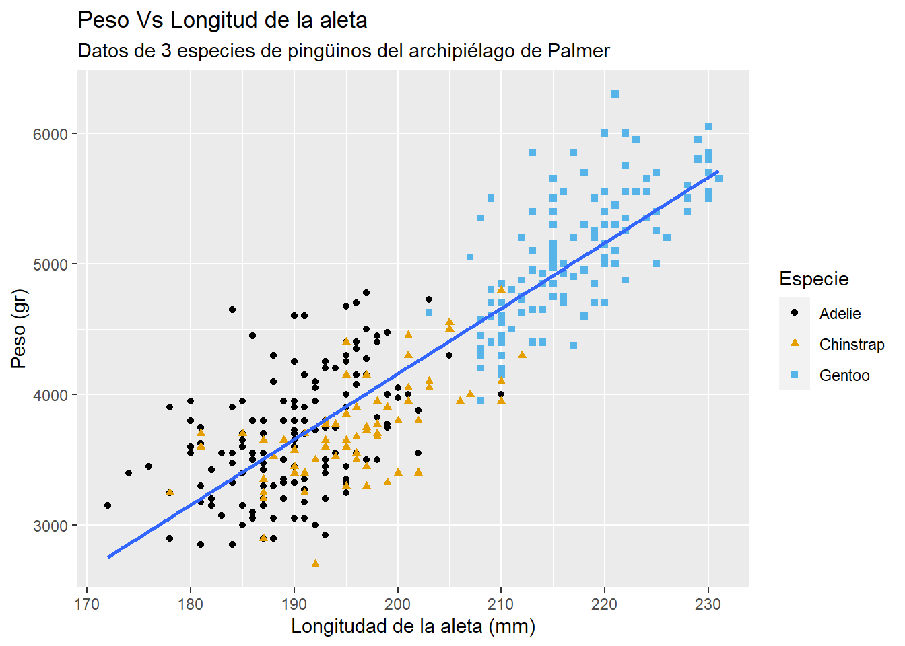
Hablar de EDA es una forma de organizar las ideas, algunas personas o autores pueden considerar que el EDA incluye la limpieza de datos e incluso alguna modelación. Por sencillez, vamos a considerar que el EDA está compuesto principalmente por transformación de variables y visualizaciones↩︎
Investigue qué es un tibble↩︎
Esto no debe hacerse a la ligera, más adelante nos ocuparemos de cómo tratar estos
NA, por ahora vamos a concentrarnos en hacer gráficas↩︎Ejecute el comando en la consola, a menos que quiera imprimir una lista de colores siempre que ejecute el código en su editor↩︎
Responder esta pregunta es importante para entender el funcionamiento de
ggplot2↩︎Estos son los llamados ridgeline plots o joyplots↩︎
Personalizar no quiere decir necesariamente mejorar↩︎
Intente varios temas↩︎